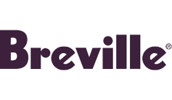

Vitaly Tulin
St. Petersburg, Russia ·
me@tulvit.net
Over 10 years in the web industry. Full stack, literally. MS degree in computer science.
Believe in idea meritocracy and truthfulness.
Freelancer. Indie maker.
Skills
Programming Languages & Tools
Workflow
- OS: Ubuntu for desktop, Debian for servers
- IDE: Visual Studio Code
- VCS: Git, GitHub
- Task manager: Trello
- Usability and quality focused
- Pomodoro technique user
Testimonials
Vitaly did a terrific job on my project. His quality of work was very high and throughout the process he was responsive, thorough, flexible, and worked independently, requiring little direction. I would absolutely use him again, and recommend him highly.
Mike Mills, Mills Entertainment
Vitaly is an efficient, intelligent and reliable contractor. His ideas and overall work were very high quality. Highly recommended.
Simon Goode, Reboot Resolve
Vitaly Tulin is the best contractor I have had the pleasure to work with. He offers the skills and professionalism necessary to complete the task on-time and exceeded my every expectation.
Robert Friskney, Blue Hand Web Design
Also have a pleasure to work with

Maker of
Bookshelf
Books I was inspired by, mostly on management, marketing & business.
- Ogilvy on Advertising, David Ogilvy
- Rework, David Heinemeier Hansson and Jason Fried
- Getting Things Done: The Art of Stress-Free Productivity, David Allen
- Principles: Life & Work, Ray Dalio
- Managing Corporate Lifecycles, Ichak Adizes
Interests
Former musician (accordion, piano, harmonica). Cycling, fishing, yoga (including meditation). Stock market. Beer.
Current passion (since late 2013) — painting.


Check out my Instagram, @will_add_later!